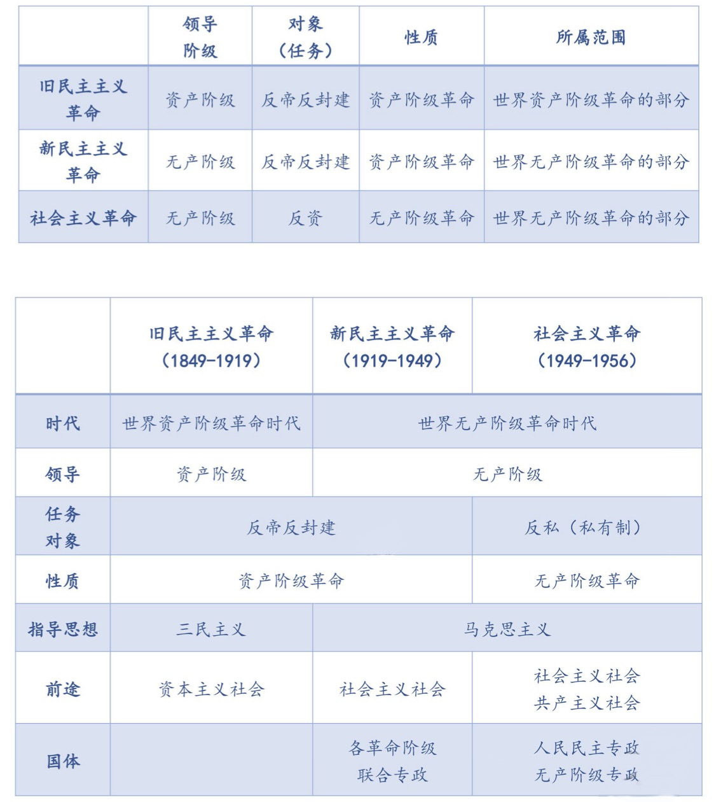

开天辟地的大事变
2022.09.11
小点
- 初期的新文化运动的基本内容有
- 提倡民主科学
- 【对】✅提倡个性解放
- 提倡新文学
- 反对专制和迷信盲从
- 【错】❌对孔学的批判是为发展新民主主义扫清思想障碍
- 北京大学
- 是新文化运动的中心和五四运动的策源地
- 【错】❌{是各地共产主义进行党建活动的联络中心}，-> 上海才是！
- 最早在我国传播共产主义
- 是我们党在北京早期活动的历史见证地
- 五四运动
- 【错】❌{是无产阶级发动的}【错】❌{是无产阶级领导的}
- 【对】✅五四运动是一场以先进青年知识分子为先锋、广大人民群众参加的彻底反帝反封建的伟大爱国革命运动，是一场中国人民为拯救民族危亡、捍卫民族尊严、凝聚民族力量而掀起的伟大社会革命运动，是一场传播新思想新文化新知识的伟大思想启蒙运动和新文化运动，以磅礴之力鼓动了中国人民和中华民族实现民族复兴的志向和信心。五四运动后一阶段(6月5日以后)，中国无产阶级登上舞台，显示了伟大的力量,对五四运动的发展起着决定性作用。但是，还不能说五四运动本身是无产阶级领导的，更不能说是无产阶级发动的。
- 【错】❌五四运动点燃了中华民族伟大复兴的灯塔
- 【对】✅中国共产党点燃了中华民族伟大复兴的灯塔
- 十月革命
- 【错】❌十月革命一举推翻沙皇统治，建立起社会主义俄国，令中国先进分子十分向往
- 【对】✅二月革命后建立的资产阶级联合政府一举推翻沙皇统治
李大钊著作
- 1918年7月,他发表《法俄革命之比较观》一文,指出：“俄罗斯之革命是二十世纪初期之革命，是立于社会主义上之革命”，向中国人民第一次正确地阐述了十月革命的性质。
- 1918年11月、12月，李大钊相继发表《庶民的胜利》《布尔什维主义的胜利》两篇文章,深刻揭露了第一次世界大战的本质，热情歌领了十月革命和布尔什维主义的胜利，欢呼“将来的环球，必是赤旗的世界”。
- 1919年9月、11月，他又发表《我的马克思主义观》一文，明确地把马克思主义称为“世界改造原动的学说”，并且对马克思的唯物史观、剩余价值学说和阶级斗争理论作了比较系统的介绍。这表明，李大钊已经成为中国的第一个马克思主义者。
三次革命对比
